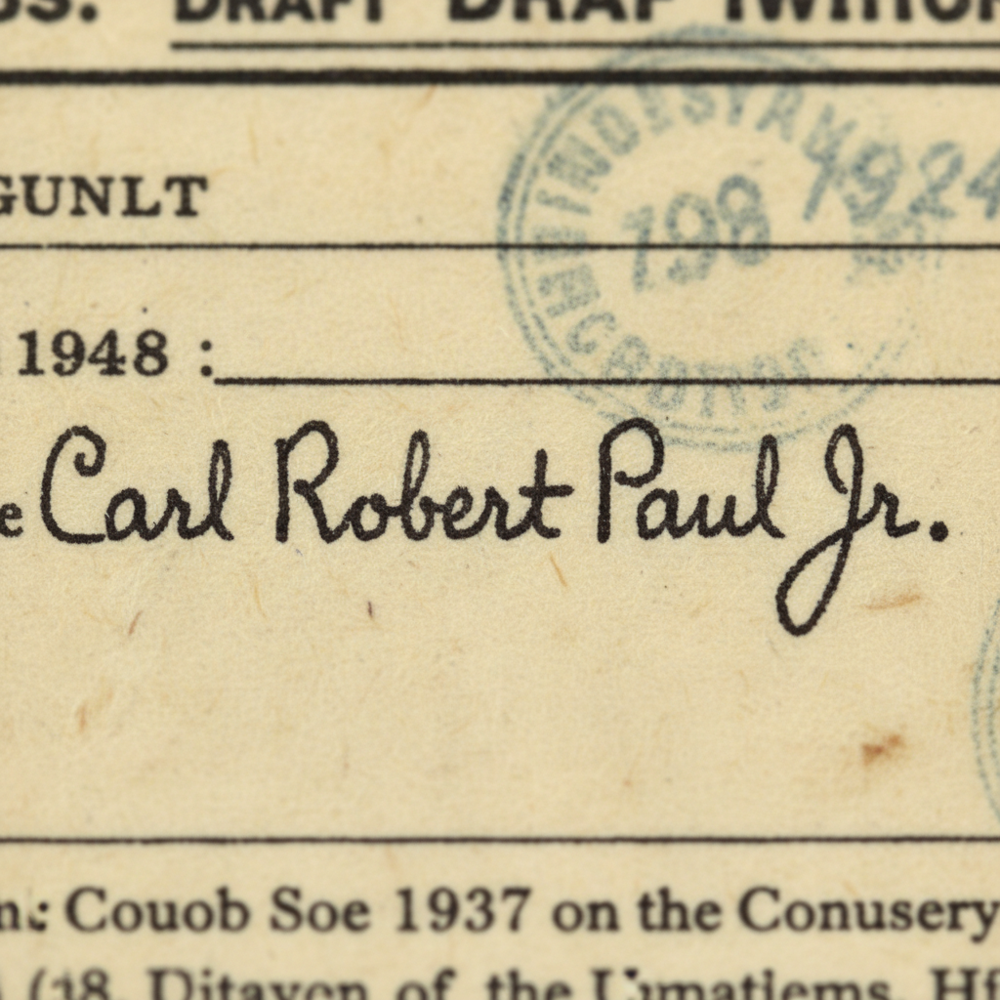

[UPDATE] Carl Robert Paul Jr. - Found his parents, siblings, and ancestors going back 4 generations! Family was in Missouri since 1830s
UPDATE on my grandfather Carl Robert Paul Jr. (1907-1999)! After you all helped solve the signature mystery and career timeline, I went deep on his family tree. Found some absolutely wild stuff - his family has been in Missouri since the 1830s, and there's some serious family drama.
Here's what I discovered about his parents Carl Sr. (1879-1977) and Sarah "Sally" Fremont (1881-1929), plus siblings and ancestors:
**Parents:**
Carl Robert Paul Sr. - insurance agent from Axtell, MO, married THREE times (last wife 30+ years younger)
Sarah Jane Fremont - died age 48 when Carl Jr. was 22, her death basically destroyed the family
**Siblings:**
Carl Jr. was the 9th of 10 kids - and his twin sister Caroline was the youngest. The age gaps are insane.
**Ancestors:**
Found the family came from Kentucky in 1830s, were early Missouri settlers. His great-grandfather fought in the Civil War (Union side), and there's a family legend about a land grant that might actually be real.
Anyone else researching Missouri families from this era? The land records are a goldmine but I'm hitting walls on some lines.
